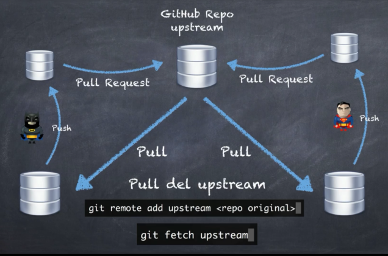
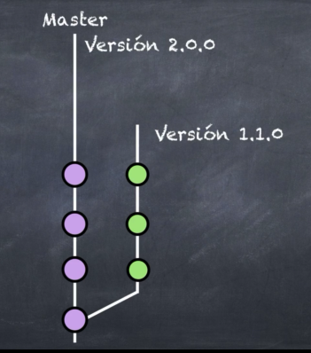
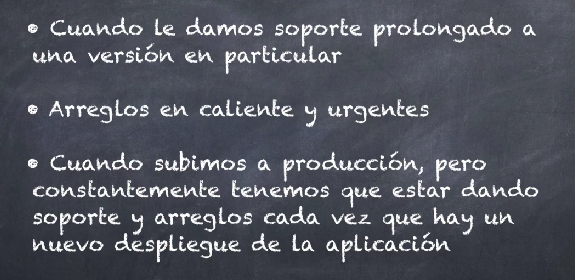

Lo que vamos aprender continuación es muy usado cuando nosotros tenemos
algún compañero de trabajo nuevo que no confiamos mucho en él todavía como para darle acceso a todo
el repositorio.
Entonces le decimos a él, haz un fork en este caso y empieza a trabajar tú en ese repositorio.
Ok,
vamos a suponer el siguiente caso tenemos nuestro repositorio central en GitHub que en este momento
lo vamos a llamar upstream.
Entonces llega a Batman y él hace un fork de el repositorio completo ok.
El está trabajando ahí de forma aislada que ya lo tiene en su github y luego llega Superman y también
hace un fork es el mismo proyecto.
Ok, en este punto del tiempo ambos repositorios serían iguales, no?
Porque todavía ninguno de los dos ha hecho cambios.
Pero bueno, llega Batman y hace un clon a su repositorio local, al igual que Superman hace un clon
a su repositorio local.
Ambos hacen cambios locales, hacen pushes (push) a sus respectivos repositorios en GitHub y luego para que
estos repositorios actualicen el upstream, en este caso el repositorio central, ellos tienen que hacer
pull request.
Todo parece normal, pero la pregunta del millón es cómo podemos actualizar nuestro fork siendo nosotros
Batman?
Es decir, cómo podemos saber los cambios que hizo Superman y tenerlos en nuestro repositorio para poder
realizar trabajos?
Porque puede ser que Superman haga cosas que nosotros ocupamos en nuestro repositorio.
Tanto Batman como Superman deberían de hacer un pull del upstream ok. Posteriormente ellos podrían hacer cambios locales, hacer push a sus respectivos repositorios y luego hacer la solicitud de un pull request para que estos cambios sean aceptados en el upstream o el repositorio central. Pero cómo podemos hacer eso si nosotros tenemos ya un remoto agregado en nuestro guía local? Mmmm. Bueno, simplemente tendríamos que agregar un nuevo remoto. Y luego tenemos que hacer un fetch o un pull para actualizar nuestro repositorio local y luego poder hacer push y pull requests otra vez.
Primero creamos un repositorio en github, luego agregamos archivos y los hicimos commits y tag y l
o subimos con un push a github, luego en Vs code agregamos otro archivo por lo que decidimos crear una nueva rama
y movernos ahi, volvemos a usar git add ., git commit -m "villanos.md"
¿PERO COMO PODEMOS AGREGAR LA RAMA A GITHUB
En esta seccion vamos a simular como si un compañero de trabajo a creado una rama aparte llamada rama-misiones entones como hacemos para traer esa rama a mi consola local pues con los siguientes coomandos traeremos:
cuando ya haygamos fusionado nuestra rama secundaria con la principal ya no la necesitamos es por ello que la eliminamos en github pero tambien deberiamos hacerlo en nuestra consola local y la eliminamos con los siguientes comandos:
suponiendo de que nosotros tenemos nuestra línea de tiempo, nuestra súper aplicación o lo que sea que estemos desarrollando, nosotros vamos a ir paulatinamente avanzando hasta llegar a la versión 2.0, por ejemplo. Pero sucede que en algún determinado punto se crea una rama, como por ejemplo la versión 1.1.0, en la cual estuvimos trabajando en ciertas actualizaciones que eventualmente no fueron incluidas en la versión master. Pero son necesarias porque llega un cliente y nos dice No, la verdad es que yo no voy a pagar la versión 2, necesito que sigamos trabajando en la versión una versión 1 en la versión 1 y se queda de esa manera. Esto es una forma de trabajar también que realmente sucede en la vida real, especialmente si ustedes cobran o hacen cambios muy dramáticos en el cambio de sus versiones.
Ahora, esto es bien común verlo cuando le damos soporte prolongado a una versión en particular o cuando nos pagan para darle mantenimiento a esa versión en particular. La otra es cuando realizamos arreglos en caliente o cambios que son urgentes, como por ejemplo si subimos ya la aplicación. Pero resulta que la gente se dio cuenta de que no funcionaba con su usuario. No hay logging, no funciona algo, entonces tenemos que hacer ese cambio inmediatamente. Y la otra es cuando nosotros subimos a producción algo, pero constantemente tenemos que estar dando soporte y arreglos cada vez que hay un nuevo despliegue. Esto ayuda mucho a que nosotros podamos analizar o el equipo de soporte pueda darnos un feedback o una retroalimentación de lo que está pasando para que nosotros después podamos aplicar las correcciones. Así que vamos a crear un ejemplo de una rama de este tipo.
Hacemos unos cambios en los archivos y los volvemos commit
Aqui creamos tag